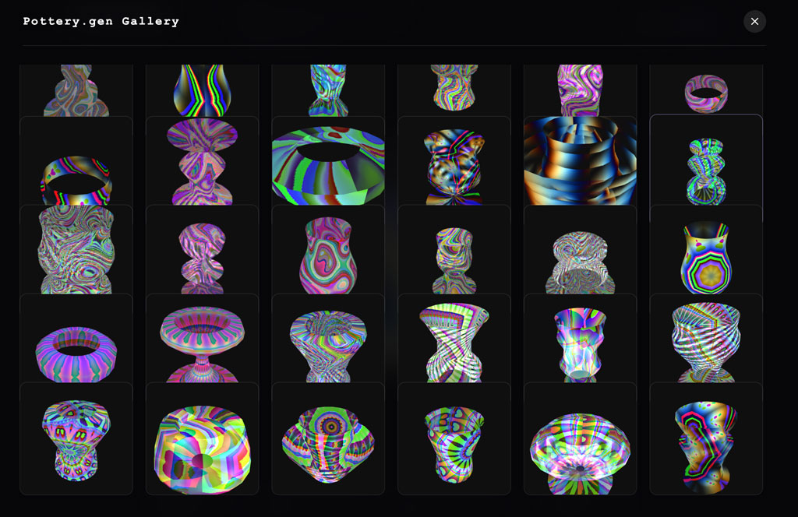

INFO
Pottery Generator is a digital craft tool combining p5.js and Hydra to sculpt and glaze 3D objects in real-time.
Sculpt a custom 3D vessel by drawing a vertical curve on the screen.
Glaze your pottery dynamically by tweaking the Hydra texture with the sliders.
Love your creation? → press [S] to save and download it as a PNG.
Want a new shape? → simply draw a new line to reshape your pottery.
Hate the background? → adjust the background slider to shift the mood.
CREDITS
Design and develop by Lucie Lin and mentored by Ted Davis
a first version of this tool was created in collaboration with Alina Prokopchuk and Zheye Cai
during a class on making tools with p5.js and hydra, taught by Ted Davis at IDCE MA HGK/FHNW
